BioAlerta
Predicción de amenaza de especies en Bolivia
ML + Geoespacial para conservación de biodiversidad
Random Forest
MLflow
DVC
DagsHub
DAT255 · MLOPS · 2026
Marco Teórico
Bolivia: país megadiverso
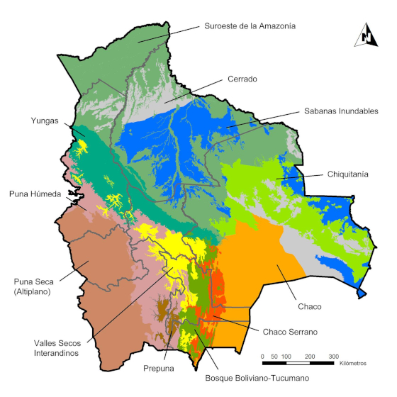
14 ecorregiones — Amazonía, Andes, Chaco, Pantanal
Categorías IUCN — Lista Roja
LCLeast
Concern
Concern
NTNear
Threatened
Threatened
VUVulnerable
ENEndangered
CRCritically
Endangered
Endangered
EW/EXExtinct
DD (Data Deficient): sin datos suficientes para evaluar riesgo
→ candidata a predicción por ML.
Traits-based modeling: rasgos funcionales (masa, rango, dieta)
predicen vulnerabilidad al reflejar la respuesta biológica a la presión humana
(Purvis et al. 2000; Olden et al. 2008).
Especies Amenazadas en Bolivia
Ejemplos del dataset con categoría IUCN conocida
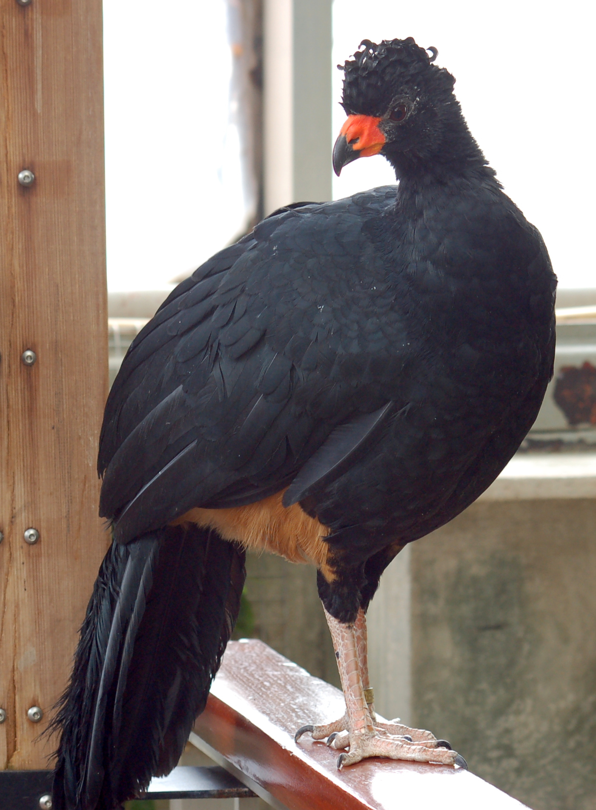
Crax globulosa — Paujil globoso
EN — Endangered
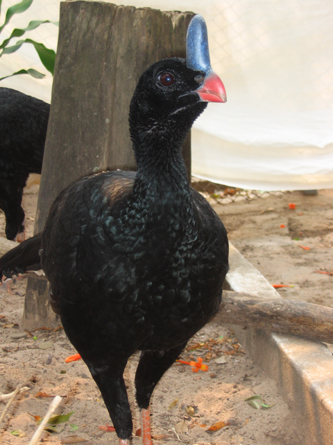
Pauxi unicornis — Paují cornudo
CR — Critically End.
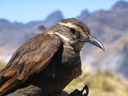
Cinclodes aricomae
CR — Critically End.
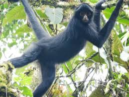
Ateles chamek — Mono araña
EN — Endangered
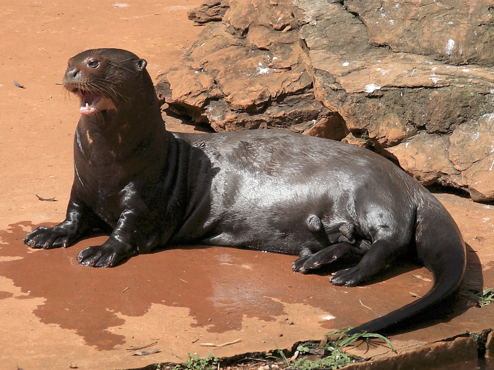
Pteronura brasiliensis
EN — Endangered

Inia geoffrensis — Bufeo
VU — Vulnerable
El Problema
Muchas especies de Bolivia no tienen categoría IUCN asignada
— sin datos de amenaza no hay priorización para conservación.
165
aves sin etiqueta
2.7% amenazadas
37
mamíferos sin etiqueta
6.9% amenazadas
Desafío: clase extremadamente minoritaria.
Un modelo que prediga siempre "no amenazada" tendría 97.3% de accuracy — y sería inútil.
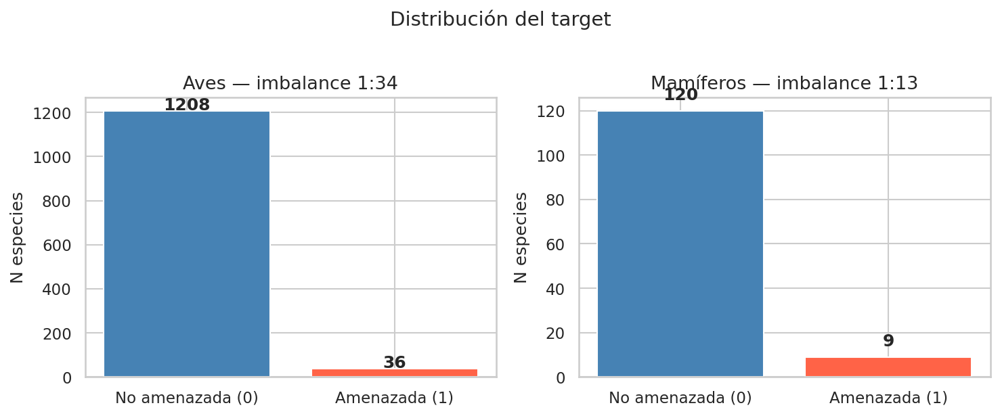
Distribución de clases — aves y mamíferos
Objetivo
Clasificar especies como amenazadas (VU/EN/CR)
o no amenazadas (LC/NT)
usando rasgos biológicos, variables ambientales y presión humana.
- Pipeline reproducible con MLOps (DVC + MLflow + DagsHub)
- Comparar 5 algoritmos con validación cruzada estratificada (k=5)
- Identificar variables de mayor importancia para la amenaza
- Predecir categoría para las 165 aves + 37 mamíferos sin etiqueta
Métricas:
ROC-AUC discriminación ·
PR-AUC bajo desbalance ·
F1-macro balance
Etiquetas:
1 — Amenazada
0 — No amenazada
Metodología
GBIF1.37M ocurrencias
→
Centroiderobusto/especie
→
Features3 bloques
→
PreprocesoOHE · impute
→
CV k=5Stratified
→
5 modelosROC-AUC
Desbalance:
class_weight='balanced' — penaliza errores en la clase amenazada.Umbral adaptativo: threshold = prevalencia (0.027 aves · 0.069 mamíferos) en lugar de 0.5.
| Bloque | Fuente | Variables clave |
|---|---|---|
| Rasgos biológicos | AVONET PanTHERIA | Masa, longitud alar, rango geográfico, dieta, hábitat |
| Variables ambientales | WorldClim GFW MapBiomas | Temperatura, precipitación, estacionalidad, deforestación |
| Presión humana | RAISG | Minería, petroleras, quemas, ANPs |
Distribución de Variables
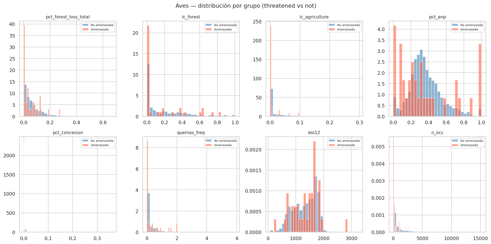
Distribución de variables clave — Aves
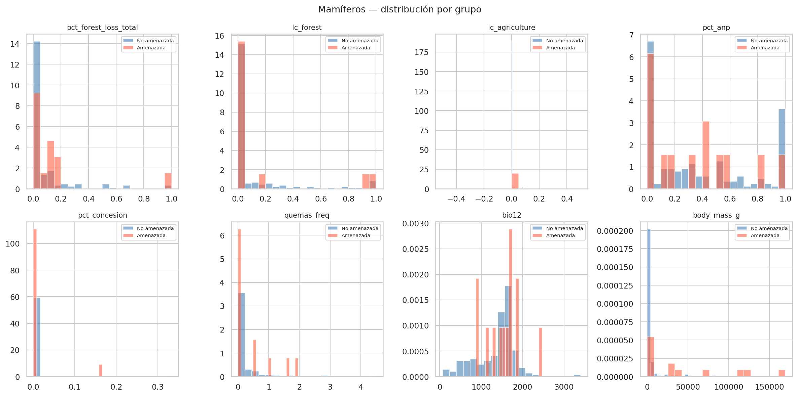
Distribución de variables clave — Mamíferos
2.2 GB de rasters y shapefiles procesados con rasterio + geopandas.
Versionados con DVC — reproducibles sin recomputar la extracción geoespacial.
Modelos Comparados — Aves
| Modelo | ROC-AUC | PR-AUC | F1-macro |
|---|---|---|---|
| Random Forest | 0.848 ± 0.088 | 0.192 | 0.130 |
| Gradient Boosting | 0.831 ± 0.074 | 0.168 | 0.112 |
| SVM (RBF) | 0.812 ± 0.071 | 0.145 | 0.103 |
| Logistic Regression | 0.794 ± 0.062 | 0.121 | 0.098 |
| KNN | 0.761 ± 0.095 | 0.098 | 0.085 |
CV estratificada k=5 ·
Baseline PR-AUC ≈ 0.027 (prevalencia)
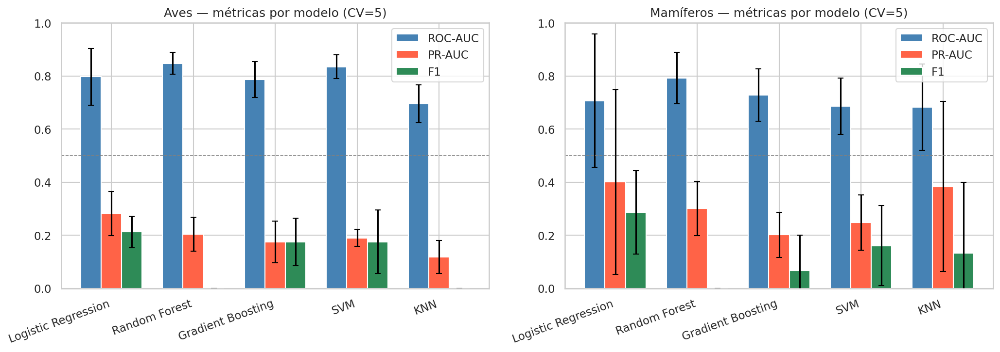
Comparativa visual ROC-AUC y PR-AUC por modelo
Resultados — Random Forest
ROC-AUC Aves
0.848
PR-AUC Aves
0.192
7.1× mejor que azar
ROC-AUC Mamíf.
0.792
PR-AUC Mamíf.
0.157
2.3× mejor que azar
Umbral adaptativo: threshold = prevalencia
(0.027 aves · 0.069 mamíferos) — maximiza recall sin colapsar precision.
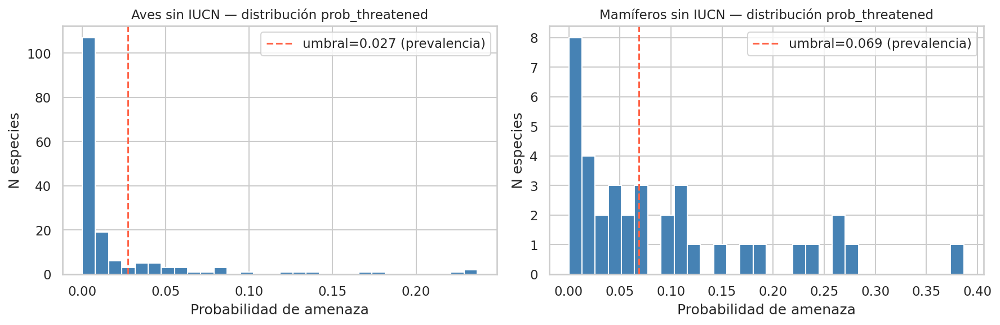
Distribución de probabilidades predichas por clase
Importancia de Variables
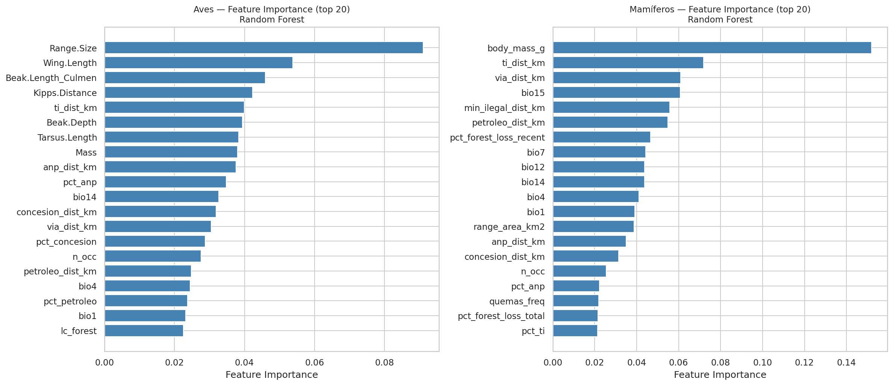
Top variables — Random Forest
Aves — Top features
Wing Length12.4%
Mass (AVONET)11.8%
Range size8.3%
Mamíferos — Top features
Mass (PanTHERIA)38.9%
Temp. Estacionalidad8.1%
La masa corporal domina en mamíferos (K-selection): especies grandes
son más vulnerables por baja tasa reproductiva.
MLOps: DVC + DagsHub
DVC versiona 2.2 GB
Rasters WorldClim, shapefiles RAISG, features intermedios — sin sobrecargar Git.
DagsHub S3 remoto
Almacenamiento gratuito para archivos DVC.
dvc push / dvc pull entre máquinas.
GitHub ↔ DagsHub sincronizados
Código y datos siempre apuntan al mismo commit hash.
Reproducibilidad total
Clonar repo +
dvc pull reconstruye exactamente el entorno de datos.
git clone https://github.com/.../bioAlerta
dvc remote add origin https://dagshub.com/.../bioAlerta.dvc
dvc pullMLOps: MLflow
12 runs registrados
5 modelos × 2 clases + 2 runs finales con artefactos
Parámetros
modelo, clase taxonómica, cv_folds, random_seed
Métricas
roc_auc, pr_auc, f1_macro + desv. estándar de CV
Artefactos
Modelos serializados
best_Aves, best_Mamiferos
Runs
12
Modelos
5
Ganador
Random
Forest
Forest
UI en DagsHub: experimentos comparables online, sin levantar servidor local.
Pipeline Reproducible
01
Datos GBIF
→
Datos GBIF
02
Centroides
→
Centroides
03
Features geo
→
Features geo
04
Preproceso
→
Preproceso
05
Modelos
→
Modelos
06
Predicciones
Predicciones
git clone https://github.com/.../bioAlerta
conda env create -f environment.yml && conda activate bioalerta
dvc pull # descarga 2.2 GB de datos
jupyter nbconvert --execute notebooks/01_data_collection.ipynb
# ... hasta 06_predictions.ipynb
Código versionado con Git ·
Datos con DVC
Experimentos con MLflow ·
Todo online en DagsHub
BioAlerta · DAT255 · MLOPS · 2026